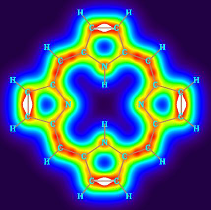
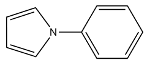
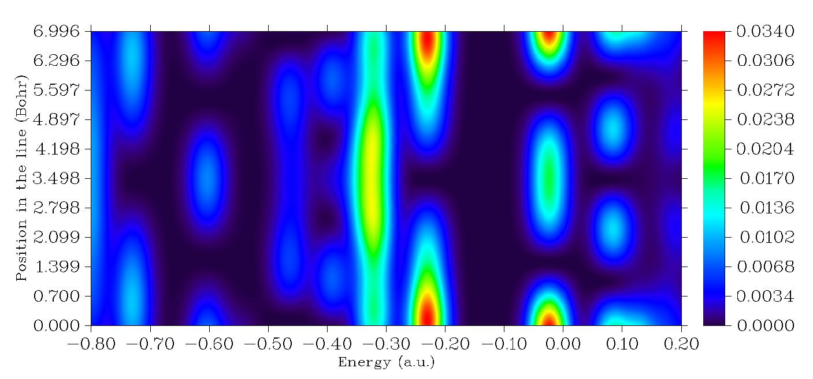
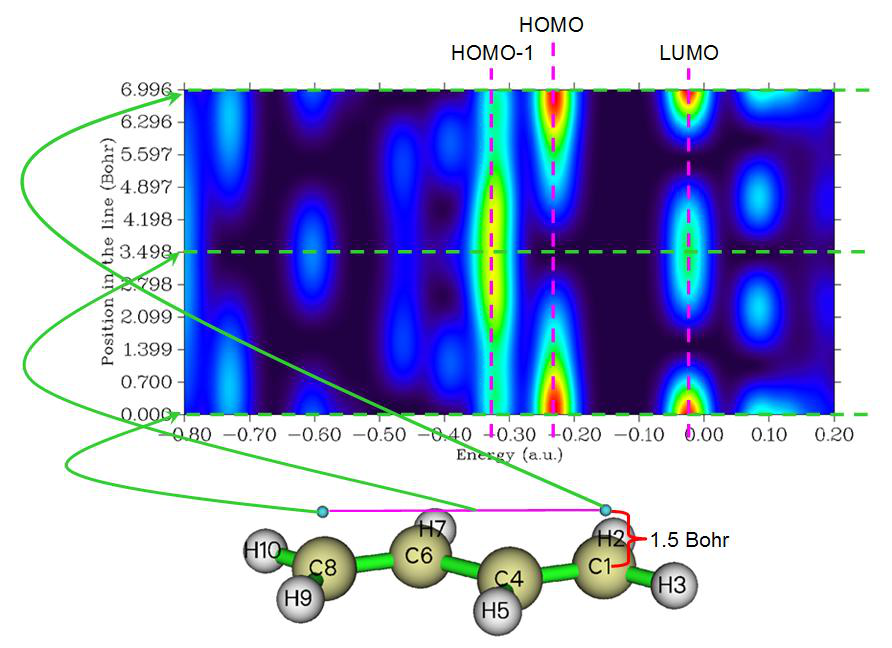
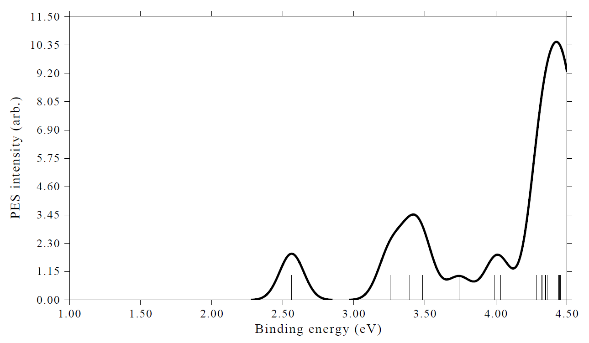
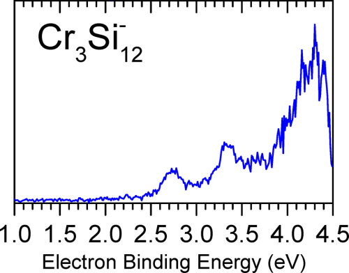
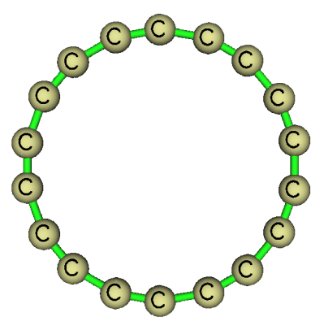
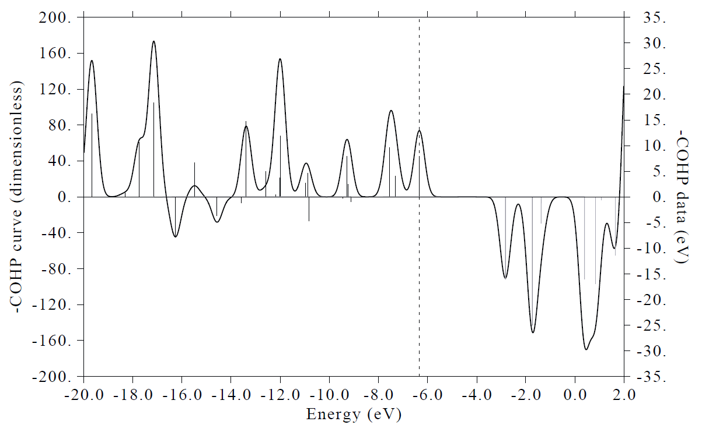

4.10 Plot density-of-states (DOS) maps¶
Multiwfn manual, p.634–654. Images:
../imgs/.
It is worth to note that the precondition of using the convenient "d" mode in inputting atomic indices is that there is no atom in the ring connecting more than two other atoms in the ring. For example, for the naphthalene shown below, you should not enter "d" mode and input 1-10 to calculate the AV1245 and AVmin to study the global aromaticity around the whole system, because the atoms 9 and 10 simultaneously connect three atoms, in this case the correct atomic sequence in the ring cannot be automatically determined by Multiwfn.
4.10 Plot density-of-states (DOS) maps¶
In this section, I will illustrate how to use Multiwfn to easily plot various kinds of density-of-states (DOS) maps. The relevant theories and usage introductions of the DOS module can be found in Section 3.12.
More in-depth discussions and DOS plotting examples can be found in my blog article "Plotting density-of-states maps by Multiwfn to study electronic structure" (http://sobereva.com/482, in Chinese)
4.10.1 Plot total, partial and overlap DOS for N-phenylpyrrole¶
In this example, we will plot total, partial and overlap density-of-states (TDOS, PDOS and OPDOS) for N-phenylpyrrole, whose structure is shown below. This example consists of six parts. Please read Section 3.12.1 first if you are not familiar with DOS.
Because basis function information is required in plotting PDOS and OPDOS, we use .fch as


input file in these examples, using .mwfn, .molden or .gms file is also OK, but .wfn/.wfx cannot not used, since they do not contain information of basis function and virtual MOs. If you only need to obtain TDOS, you can also simply use a plain text file recording MO energy levels or the Gaussian output file with pop=full keyword as input file, see Section 3.12.1 for file format.
It is noteworthy that if you intend to plot PDOS and OPDOS based on the default Mulliken orbital composition method, employing diffuse functions must be avoided, because they severely hurt the reliability of the orbital compositions evaluated by Mulliken or SCPA method. However, you can safely use diffuse functions if you let Multiwfn calculate orbital composition via Hirshfeld or Becke method, but OPDOS cannot be plotted in this case. The wavefunction of present system was generated at B3LYP/6-31G* level.
Part 1: Plot total DOS (TDOS) Boot up Multiwfn and input below commands examples\N-phenylpyrrole.fch
Multiwfn session
- 10 — Plot various kinds of DOS maps
- 0 — Plot map Since currently no fragment is defined, only TDOS is plotted. The TDOS map pops up immediately, see below
TDOS
9.00
8.00
7.00
Density-of-states 6.00 5.00 4.00
3.00
2.00
1.00
0.00
-0.80-0.70-0.60-0.50-0.40-0.30-0.20-0.100.000.100.20Energy (a.u.)
In this map, the curve is the TDOS simulated based on the distribution of MO energy levels, each discrete vertical line corresponds to a molecular orbital (MO), the dashed line highlights the position of HOMO, the black and gray lines indicate position of occupied and unoccupied MO levels, respectively. In the negative part, the region around -0.40 a.u. has obviously larger state density than other regions.
Clicking mouse right button on the graph to close it, and select option 0 to return to last menu. We can also change the energy unit and energy range, and the line height can be used to indicate orbital degeneracy. To realize this, input below commands:
Multiwfn session
- 8 — Switch the unit from the default a.u. to eV
- 2 — Set energy range
- -30,5,5 — Set lower and upper limits to -30 eV to 5 eV, the spacing between labels is 5 eV
- 9 — Using line height to show orbital degeneracy
0.05 // If energy difference between two orbitals is less than 0.05 eV, they will be regarded as degenerate
Multiwfn session
- 0 — Plot TDOS map again Now we have the map below. The line height indicates degeneracy and corresponds to the axis at right side. As can be seen, some orbitals have degeneracy of
0.36 TDOS 10
0.32 9
8
0.28
7
Density-of-states 0.24 0.20 0.16 0.12 6 5 4 3 Degeneracy
0.08 2
0.04 1
0.00 0
-30.00-25.00-20.00-15.00-10.00-5.000.005.00Energy (eV)
In addition, if you would like to draw the lines at bottom of the curve, you can select option “22 Toggle drawing lines at bottom of curves” in post-processing menu and then select option 1 to replot, you will see
0.36 TDOS
0.32
0.28
Density-of-states 0.24 0.20 0.16 0.12
0.08
0.04
0.00 2 0 Degen.
-30.00-25.00-20.00-15.00-10.00-5.000.005.00Energy (eV)
Part 2: Plot PDOS and OPDOS for fragments
Next, we will define the heavy atoms of pyrrole moiety as fragment 1 and that of the phenyl moiety as fragment 2 to check their PDOS and OPDOS. In addition, we will define all hydrogens as fragment 3.
Boot up Multiwfn and input examples\N-phenylpyrrole.fch
Multiwfn session
- 10 — Plot various kinds of DOS maps
- -1 — Enter the interface for defining fragments. You can define up to 10 fragments. PDOS will be plotted for all of them, but OPDOS will only be drawn between fragments 1 and
Multiwfn session
- 1 — Define fragment 1 a
- 1-5 — Add carbons and nitrogen of pyrrole moiety (atoms 1~5) to the fragment q
- Save fragment 1 2 — Define fragment 2 a
- 10-13,15,17 — Add phenyl moiety (atoms 10~13, 15 and 17) to the fragment q
- Save fragment 2 3 — Define fragment 3 a 6-9,14,16,18-20
- Add all hydrogens to the fragment q — Save fragment 3
- 0 — Return to last menu
- 2 — Set X-axis
- -1.1,-0.1,0.1 — Set the range of X-axis to -1.2 ~ -0.1 a.u., so that all valence MOs can be shown in the graph. The step between labels is set to 0.1 a.u.
0 // Draw TDOS+PDOS+OPDOS The current graph is not very ideal. Close the graph, you can see many options used to customize the graph, such as setting curve colors, setting legend texts. Try to play with them and if you are confused you can consult Section 3.12.3. Here we select option 4 and input -2,9,1 to set lower, upper limits and label interval of left Y-axis (corresponding to TDOS and PDOS) to -2.0, 9.0 and 1.0, respectively. Select 14 and input the scale factor 0.2, then range of the right Y-axis (corresponding to OPDOS) will be set to -0.4, 1.8 (because -2.00.2=-0.4 and 9.00.2=1.8). Shrinking the range of the Y-axis at right side is equivalent to enhancing the amplitude of OPDOS curve, which makes the variation of OPDOS in the map clearer. Then select option 1 to replot the DOS map, you will see
9.00 1.80
8.00 7.00 TDOSPDOS frag.1PDOS frag.2PDOS frag.3 TDOSPDOS frag.1PDOS frag.2PDOS frag.3OPDOS 1.58 1.36
6.00 1.14
Density-of-states 5.00 4.00 3.00 2.00 0.92 0.70 0.48 OPDOS
1.00 0.26
0.00 0.04
-1.00 -0.18
-2.00 -0.40
-1.10-1.00-0.90-0.80-0.70-0.60-0.50-0.40-0.30-0.20-0.10Energy (a.u.)
The axis at left side corresponds to TDOS and PDOS, while the one at right side corresponds to OPDOS. The red, blue and magenta curves and discrete lines represent PDOS of fragment 1, 2 and 3, respectively. It can be seen that in most valence MOs, the fragments 1 and 2 have comparable amount of contribution. The fragment 3 (hydrogens) mainly contributes to the MOs between -0.60 ~ -0.35 a.u. Green curve is the OPDOS between fragments 1 and 2, its positive part implies that the MOs in corresponding energy range show bonding character between the two fragments (e.g. the one at -0.8 a.u., which corresponds to MO14); there are also regions where OPDOS is negative, e.g. the HOMO-1 (-0.213 a.u.) behave as antibonding orbitals between the two fragments.
Part 3: Plot PDOS of a specific atom orbital Current molecule is in YZ plane, as an example, let us check the PDOS of px atomic orbital of
the nitrogen atom, it represents π electron on this site. Select 0 to return to last menu and then input
Multiwfn session
- -1 — Define fragments
- -2 — Fragment 2 is not needed, so we input corresponding negative value to unset it
- -3 — Also unset fragment 3
- 1 — Redefine fragment 1 clean
Print out information of all basis functions The information corresponding to nitrogen atom is extracted and shown below
Basis: 61 Shell: 25 Center: 5(N ) Type: S
Basis: 62 Shell: 26 Center: 5(N ) Type: S
Basis: 63 Shell: 27 Center: 5(N ) Type: X
Basis: 64 Shell: 27 Center: 5(N ) Type: Y
Basis: 65 Shell: 27 Center: 5(N ) Type: Z
Basis: 66 Shell: 28 Center: 5(N ) Type: S
Basis: 67 Shell: 29 Center: 5(N ) Type: X
Basis: 68 Shell: 29 Center: 5(N ) Type: Y
Basis: 69 Shell: 29 Center: 5(N ) Type: Z
Basis: 70 Shell: 30 Center: 5(N ) Type: XX
Basis: 71 Shell: 30 Center: 5(N ) Type: YY
Basis: 72 Shell: 30 Center: 5(N ) Type: ZZ
Basis: 73 Shell: 30 Center: 5(N ) Type: XY
Basis: 74 Shell: 30 Center: 5(N ) Type: XZ
Basis: 75 Shell: 30 Center: 5(N ) Type: YZ
Current system is calculated under 6-31G* basis set, according to the basis set definition, each valence atomic orbital is represented by two basis functions of corresponding type. Therefore, what we should do is to put basis functions 63 and 67 into the fragment, they collectively represent the px orbital of nitrogen (For other kinds of basis set, you can consult Section 4.7.6 on how to identify correspondence between basis functions and atomic orbitals). Input below commands
b 63,67 // Then you can input command all again, the basis functions added to present fragment are marked by asterisks
Multiwfn session
- q — Save fragment
- 0 — Return 0
9.00
8.00 TDOSPDOS frag.1
7.00
6.00
Density-of-states 5.00 4.00 3.00 2.00
1.00
0.00
-1.00
-2.00
-1.10-1.00-0.90-0.80-0.70-0.60-0.50-0.40-0.30-0.20-0.10Energy (a.u.)
Part 4: Plot PDOS and OPDOS of all π molecular orbitals This molecule is in YZ plane, assume that we only intend to study PDOS/OPDOS of π orbitals of pyrrole and phenyl moieties and want to get rid of effect of all other MOs, although in the fragment definition interface we can choose each PX basis function in turn, because there are too many atoms, this process will take you a lot of time and thus is very troublesome. A much better way is to use the condition selection command.
Select option 0 to return to last menu and then input
Multiwfn session
- -1 — Define fragments
- 1 — Redefine fragment 1 clean
cond // Use conditions to select basis functions. You will be prompted to input three conditions, the basis functions simultaneously satisfying the three conditions will be added to current fragment
1-5 // The first condition is that the basis functions must belong to the heavy atoms in pyrrole moiety (atoms 1~5)
[Press ENTER button] // The second condition is the index range of basis functions. Press ENTER button directly means basis function index is arbitrary
Multiwfn session
- X — The third condition is that the type of basis function should be PX q
- Save fragment 1 2 — Define fragment 2 cond
Atom index of the carbons in the phenyl moiety [Press ENTER button] // No requirement on index of basis functions
Multiwfn session
- X — Basis function must be PX type
- q — Save fragment
Return to last menu
Multiwfn session
- 0 — Draw TDOS+PDOS+OPDOS
9.00 1.80
8.00 7.00 TDOSPDOS frag.1PDOS frag.2 TDOSPDOS frag.1PDOS frag.2OPDOS 1.58 1.36
6.00 1.14
Density-of-states 5.00 4.00 3.00 2.00 0.92 0.70 0.48 OPDOS
1.00 0.26
0.00 0.04
-1.00 -0.18
-2.00 -0.40
-1.10-1.00-0.90-0.80-0.70-0.60-0.50-0.40-0.30-0.20-0.10Energy (a.u.)
This time the PDOS curves only cover high-energy regions, implying that most π MOs in
present system have higher energy than σ MOs. Please use main function 0 of Multiwfn to visualize corresponding MO isosurfaces.
Part 5: Plot PDOS for s, p, d atomic orbitals individually In the next, I illustrate how to plot PDOS for s, p, d atomic orbitals individually. Reboot Multiwfn and then input
Multiwfn session
- examples\N-phenylpyrrole.fch 10 — Plot various kinds of DOS maps
- -1 — Define fragments
- 1 — Define fragment 1 l s
Multiwfn session
- q — Save fragment
- 2 — Define fragment 2 l p
Save fragment
Multiwfn session
- 3 — Define fragment 3
Add basis functions with angular moment of d to the fragment
Multiwfn session
- q — Save fragment
- 0 — Return to last menu
- 0 — Draw TDOS+PDOS+OPDOS Then close the graph and input the following command to improve graphical effect
- 9 — Disable showing OPDOS curves
- 10 — Disable showing OPDOS lines
- 4 — Set range of Y axis
- 0,10,1 — Lower and upper limits are set to 0 and 10 with label interval of
- 1.0 — 16
Set legend of PDOS corresponding to fragment 1 s
Multiwfn session
- 2 — Set legend of PDOS corresponding to fragment 2 p
- 3 — Set legend of PDOS corresponding to fragment
Multiwfn session
- 0 — Exit the interface for setting legends
- 22 — Toggle drawing lines at bottom of curves,
- 1 — Replot the map Now you can see the map below
10.00
9.00 8.00 TDOSspd
Density-of-states 7.00 6.00 5.00 4.00 3.00
2.00
1.00
0.00
-0.80-0.70-0.60-0.50-0.40-0.30-0.20-0.100.000.100.20Energy (a.u.)
From this map, it is clear that occupied frontier MOs (those close to the dash line) are solely contributed by p orbitals.
If you want to plot PDOS for certain angular moment of orbitals for specific atoms, it is also very easy. For example, by inputting below commands in the fragment definition interface, a fragment corresponding to all p orbitals of all the four carbons in the pyrrole moiety could be defined.
Multiwfn session
- cond — Use conditions to select basis functions
- 1-4 — Atoms 1~4 [Press ENTER button]
- No requirement on basis function index P — Basis function of P angular moment
Part 6: Plot PDOS based on orbital compositions derived by Hirshfeld method Plotting PDOS requires orbital compositions. In the examples above, the compositions were evaluated using the default Mulliken method. This method is fast very, however, it is not quite robust (especially for unoccupied orbitals), and the result is completely useless when diffuse functions are employed. Here I also illustrate how to plot PDOS based on the orbital compositions derived by the Hirshfeld method, which is more robust and fully compatible with diffuse functions. The disadvantage is that Hirshfeld method is more expensive, and it can only evaluate contributions from atoms, namely the fragments can only be defined as a set of atoms.
Here we repeat the example in "Part 2" but using compositions obtained by Hirshfeld method. Boot up Multiwfn and input below commands:
Multiwfn session
- examples\N-phenylpyrrole.fch 10 — Plotting DOS
- 7 — Change the method for calculating orbital compositions
- 3 — Hirshfeld method. Then Multiwfn calculates orbital compositions for all atoms in all orbitals, for large system you need to wait for a while
Multiwfn session
- -1 — Define fragments
- 1 — Define fragment 1
- 1-5 — Set carbons and nitrogen of pyrrole moiety (atoms 1~5) as the fragment
- 2 — Define fragment 2
- 10-13,15,17 — Set phenyl moiety (atoms 10~13, 15 and 17) as the fragment
- 3 — Define fragment 3 6-9,14,16,18-20
- Set all hydrogens as the fragment 0 — Return to last menu
- 2 — Set X-axis -1.1,-0.1,0.1
- 0 — Draw TDOS+PDOS The resulting graph is almost identical to that plotted based on the compositions derived by the default Mulliken method (however, the difference is often evident for the energy range composing of unoccupied MOs, clearly the PDOS based on Hirshfeld is more reliable). Note that OPDOS cannot be plotted when Hirshfeld method is employed to calculate orbital compositions.
4.10.2 Plot local DOS for 1,3-butadiene¶
If you do not know what is local DOS (LDOS), please check Section 3.12.4 first. Briefly speaking, TDOS represents DOS curve for the whole system, PDOS describes DOS curve for an atom (or fragment), while LDOS exhibits DOS curve for a point (i.e. space-resolved). In addition,
we can plot LDOS for a set of point constituting a line as color-filled map, the X-axis corresponds to energy while the Y-axis shows position in the line. LDOS is useful when interpreting the data from scanning tunneling microscope (STM), you can find relating experimental data in e.g. J. Phys. Chem. Lett., 5, 3701 (2014).
In the current example, we plot LDOS for butadiene at selected points. First, we plot LDOS for the point over 1.5 Bohr of terminal carbon of butadiene. Boot up Multiwfn and input following commands:
examples\butadiene.fch 0 // Visualize molecular structure From output in the command-line window we can find the expected point should be 1.137 3.308 1.5 (1.5 Bohr above C1). Close the GUI window and input
Multiwfn session
- 10 — DOS plotting module
- 10 — Draw local DOS for a point 1.137,3.308,1.5 Then you will see (you can compare it with TDOS map)
0.038
0.034
0.030
0.026
Density-of-states 0.023 0.019 0.015
0.011
0.008
0.004
0.000
-0.80-0.70-0.60-0.50-0.40-0.30-0.20-0.100.000.100.20Energy (a.u.)
Close the graph and select 0 to return to the last menu. Next, we plot color-filled map along the line connecting the two points above 1.5 Bohr of the two terminal carbons (C1 and C8), input below commands
Multiwfn session
- 11 — Draw local DOS along a line 1.137,3.308,1.5 -1.137,-3.308,1.5
- 200 — Evenly taking 200 points along line Then close the graph that pops up and input
- 4 — Modify the ratio between Y and X axes
- 0.5 — The length of Y-axis will be half of X-axis
- 1 — Replot
Then you can see
The color in this graph represents density of states at different 3D spatial positions (Y-axis) and different energies (X-axis). The pink arrows highlight the gaps at three different spatial positions.
If you still feel difficult in understanding meaning of the map, please check below figure, in which some important information is explicitly labelled.
It is easy to understand, the lowermost horizontal line of the graph above (viz. the green dash line at Y=0) corresponds to the LDOS curve map at the position of 1.5 Bohr above C1, which has been plotted by us earlier.
4.10.3 Plot DOS map for unrestricted open-shell system: Na3O@Si12C12
In Section 4.10.1, we have plotted a closed-shell system, while in this section, I will illustrate how to plot DOS for a typical open-shell system Na3O@Si12C12, which was studied in my work J. Comput. Chem., 38, 1574 (2017) and is doublet. For open-shell cases calculated in unrestricted formalism, there are two kinds of spins, they should be simultaneously taken into account, The .fchk file can be downloaded here: http://sobereva.com/multiwfn/extrafiles/Na3O-Si12C12.rar, which corresponds to UM06-2X/6-311G* wavefunction at optimized geometry.


First, we plot TDOS+PDOS map for alpha spin, the PDOS will correspond to the Na3O. Boot up Multiwfn and input
Multiwfn session
- Na3O-Si12C12.fchk 10 — DOS plotting module
- -1 — Define fragments
- 1 — Define fragment 1 a
- 1,4,27,28 — These four atoms correspond to the Na3O moiety q
- Save fragment 0 — Return 0
Enable drawing lines at bottom of curves
Multiwfn session
- 1 — Replot You will see the graph below. By default, for unrestricted wavefunction, only alpha MOs are taken into account, therefore the following map is DOS map of alpha spin.
27.81 TDOSPDOS frag.1
24.72
Density-of-states 21.63 18.54 15.45 12.36 9.27
6.18
3.09
0.00
-0.80-0.70-0.60-0.50-0.40-0.30-0.20-0.100.000.100.20Energy (a.u.)
Choose option 0 to return to last menu. If you want to plot the DOS map for beta spin, you should select "6 Choose orbital spin" and then choose "2 Beta spin". If you do not want to distinguish spin but want to take all MOs into account, you should choose "3 Both spins". Please choose beta spin and replot the map via option 0 again, you will find the map is similar to that of alpha spin, showing that in this system the spin polarization is not quite evident.
In order to make comparison between alpha and beta DOS maps intuitive, we can try to make a figure, the upper part and lower part correspond to alpha spin and beta spin, respectively. Such a map cannot be directly produced by Multiwfn, however it can be easily prepared via Multiwfn in combination with third-part visualization software such as Origin, as shown below. The Origin version I am using is 9.0
We first use Multiwfn to plot the alpha TDOS+PDOS map in aforementioned way, in the post-processing menu, choose "3 Export curve and line data to plain text file in current folder". Rename
the DOS_curve.txt to alpha.txt. Return to DOS plotting interface, change to beta spin, plot the map and then export the data set again, rename the DOS_curve.txt to beta.txt. The DOS_line.txt can be deleted because we will not utilize it.
Boot up Origin, drag both alpha.txt and beta.txt into it to import them. Currently, in the workbook corresponding to beta spin, B and C columns correspond to TDOS and PDOS curve data, respectively. We choose "Set Column Values" option for column D (which is empty currently), set the content D to -Col(B); similarly, we set column of E to -Col(C).
Next, we select proper option to plot line map. In the worksheet corresponding to alpha spin, we add column A as X data, add columns B and C as two sets of Y data. In the worksheet corresponding to beta spin, we add column A as X data, while add columns D and E as Y data. After some adjustments, you will obtain the graph below, which nicely exhibits DOS and PDOS for alpha and beta spins, respectively.
30
20 α TDOS α PDOS (Na3O) α HOMO
β TDOS β PDOS (Na3O)
10
Density of states -10 0
-20 β HOMO
-0.8-0.7-0.6-0.5-0.4-0.3-0.2-0.10.00.10.2-30
Energy (Hartree)
Note that in order to plot a horizontal line corresponding to DOS=0 and two vertical lines highlighting HOMO level of alpha and beta spins, I also created the third worksheet and properly filled the content. The value of the alpha and beta HOMOs can be directly found from the prompts when you selecting option 0 in DOS module to draw the map, namely
Note: The vertical dash line corresponds to HOMO level at -0.171 a.u.
and
Note: The vertical dash line corresponds to HOMO level at -0.221 a.u.
The aforementioned alpha.txt, beta.txt as well as the Origin .opj file of the map have been provided in "examples\DOS\" folder.
4.10.4 Plot photoelectron spectrum (PES) for Cr3Si12− cluster
(http://sobereva.com/478).
In Section 3.12.5, the theory of PES and the interface for plotting PES have been introduced, please read it if you have not. In present section, Cr3Si12- will be taken as example to illustrate how to plot PES very easily, we will plot PES employing generalized Koopmans' theorem. This system has been studied in J. Phys. Chem. A, 122, 9886 (2018) under PBE/6-311+G* level, it is worth to note that the calculated first VIP of this system 2.56 eV.
Using the optimized structure of this system provided in supplemental material in the JPCA paper, I carried out a single point task using the same level as the paper by Gaussian 16, the resulting Cr3Si12-.fchk file can be downloaded here: http://sobereva.com/multiwfn/extrafiles/Cr3Si12-.rar.
Boot up Multiwfn and input Cr3Si12-.fchk
Multiwfn session
- 10 — DOS module
- 12 — Interface for plotting PES. You will find HOMO level has been shown on the screen, namely -0.77 eV, which is the highest one among alpha HOMO and beta HOMO
Multiwfn session
- 3 — Set shift value to meet generalized Koopmans' theorem
- 1.79 — Should be 1st VIP + E(HOMO). For present case the value is -0.77+2.56=1.79 eV
- 4 — Set X-axis
- 1,4.5,0.5 — The energy span is 1.0~4.5 eV, with label step of 0.5 eV
- 9 — Set width of curve
- 10 — Make the curve thicker than default
- 1 — Plot the spectrum The resulting spectrum is shown below. Note that the absolute value of Y-axis in fact is meaningless, you can choose option "13 Toggle showing labels and ticks on Y-axis" once to switch its status to "No" to remove the labels and ticks on the Y-axis.
The experimental spectrum provided in the J. Phys. Chem. A paper is shown below

Clearly, our simulated spectrum is in very good agreement with the experimental one, showing that our plotting procedure and methodology are completely reasonable.
4.10.5 Plot MO-PDOS map to reveal PDOS contributed by different MOs for cyclo[18]carbon¶
Note: The first published paper that came up with the idea of MO-PDOS map is my work: Carbon, 165 461 (2020), see Fig. 2. Please cite this paper if MO-PDOS map is employed in your work.
This section illustrates how to plot and analyze a MO-PDOS map. The so-called "MO-PDOS" refers to a special kind of PDOS, which is used to reveal DOS contributed by different sets of MOs (rather than by atoms or basis functions as the PDOS in common sense), the PDOS curves and discrete lines corresponding to different sets of MOs are shown using different colors. If requested, the height of discrete lines can be used to reflect degeneracy of orbital levels.
We will plot MO-PDOS for cyclo[18]carbon, its structure optimized at ωB97XD/def2-TZVP level is shown below, it is an exactly planar system with point group of D9h. The .fchk file of this
system corresponding to ωB97XD/def2-TZVP wavefunction at minimum point structure can be download here: http://sobereva.com/multiwfn/extrafiles/C18.zip.
Occupied valence MOs of this system consist of three types, you can identify their indices by viewing orbitals via main function 0:
(1) σ MOs: 19-36 (2) in-plane π MOs: 37,39,40,45,46,49,50,53,54 (3) out-plane π MOs: 38,41,42,43,44,47,48,51,52


In the MO-PDOS map to be plotted, we will use different colors to respectively reveal the position of energy levels of these orbitals as well as their contributions to total DOS.
Boot up Multiwfn and input C18.fchk
Multiwfn session
- 10 — Plot DOS
- -2 — Enter the interface for defining MO fragments of MO-PDOS
- 1 — Define 1st fragment
- 19-36 — σ MOs
- 2 — Define 2nd fragment
Multiwfn session
- 37,39,40,45,46,49,50,53,54 — in-plane π MOs
- 3 — Define 3rd fragment
Multiwfn session
- 38,41,42,43,44,47,48,51,52 — out-of-plane π MOs
- 0 — Return 0
18.10
16.29 14.48 TDOSPDOS frag.1PDOS frag.2PDOS frag.3
12.67
Density-of-states 10.86 9.05 7.24
5.43
3.62
1.81
0.00
-0.80-0.70-0.60-0.50-0.40-0.30-0.20-0.100.000.100.20Energy (a.u.)
In this figure, the red, blue and purple discrete lines indicate position of σ MOs, in-plane π MOs and out-plane π MOs, respectively. The σ ones have evidently lower energies than the π ones, while the two kinds of π MOs have similar energy distribution. From the broadened curves, we can identify the respective contributions due to the three types of MOs, the sum of heights of the colored curves just equals the black curve, which portrays the total DOS. Since the defined fragments are only composed of occupied MOs, the unoccupied region of the map is completely identical to usual TDOS map.
We can further improve the setting of the MO-PDOS map. After closing the graph, we input
Multiwfn session
- 0 — Return to last menu from the post-processing menu
- 8 — Switch the energy unit to eV
- 2 — Set energy range and step
-28,1,3 // Set lower and upper limits of plotting region to -28~1 eV with step of 3 eV, so that all occupied valence MOs and a few lowest-lying virtual MOs could be displayed in the map
Multiwfn session
- 9 — Enabling using height of discrete lines to indicate orbital degeneracy
- [Press ENTER button directly] — Use default threshold to determine degeneracy
- 0 — Plot DOS map
Close the map, then in the post-processing menu we input
Multiwfn session
- 16 — Set the texts in the legends
- 1 — Set legend for PDOS 1 sigma MOs
- 2 — Set legend for PDOS 2 in-plane pi MOs
- 3 — Set legend for PDOS 3 out-of-plane pi MOs
- 0 — Return to post-processing menu
- 6 — Disable showing TDOS discrete lines
- 1 — Redraw the graph
You should see the map below, which is quite satisfactory
10
0.45 0.40 TDOSsigma MOsin-plane pi MOsout-of-plane pi MOs 9 8
0.35 7
Density-of-states 0.30 0.25 0.20 6 5 4 Degeneracy
0.15 3
0.10 2
0.05 1
0.00 0
-28.00-25.00-22.00-19.00-16.00-13.00-10.00-7.00-4.00-1.00Energy (eV)
From the height of the colored discrete lines, you can clearly find most occupied valence orbitals are doubly degenerated.
Hint: Save and load status If you want to save current status (plotting settings, fragment definition and orbital information) of the map above to a file so that you can quickly recover the map at the next time, now you can input 0 to exit post-processing menu, then input s, then input path of the file to save the status.
The status file corresponding to the map above is given as examples\DOS\C18_MO_PDOS.dat, therefore if you want to directly replot the map above, after booting up Multiwfn and load the C18.fchk, you should input
10 // DOS plotting module
Multiwfn session
- l — Load status file examples\DOS\C18_MO_PDOS.dat
- 0 — Plot the map
4.10.6 Calculate d-band center for transition metal clusters¶
Note: Chinese version of this section with more discussions is my blog article “Using Multiwfn to calculate d-band center of transition metals” (http://sobereva.com/582, in Chinese)
d-band center refers to the center position of the PDOS corresponding to d-orbitals. d-band center of transition metals is an important quantity in explaining and predicting difference in chemisorption strength of small molecules on transition metal systems, it is also closely related to activity of surface catalysis, see PNAS, 108, 937 (2011) and Sci. Rep., 6, 35916 (2016) for more information.
The DOS plotting module of Multiwfn can be used to evaluate d-band center. Since Multiwfn automatically calculates and prints center of each PDOS curve when drawing DOS map, the d-band center can be directly obtained by defining a fragment as all D-type of basis functions of the transition metals of interest. In this section, I will take Cu13 (doublet) as an example to illustrate the calculation. d-band center of this system has also been reported in J. Clust. Sci., 29, 867 (2018). The Gaussian .fchk file of this system generated by optimization task at UPBE/Lanl2DZ level can be directly downloaded here: http://sobereva.com/multiwfn/extrafiles/Cu13.zip. This calculation level is the same as the J. Clust. Sci. paper.
Multiwfn session
- Boot up Multiwfn and input Cu13.fchk 10 — Plot DOS map
- -1 — Define fragment
- 1 — Define fragment 1 cond
No requirement on atomic indices [Press ENTER button] // No requirement on basis function indices
Multiwfn session
- D — The basis functions must be D-type
- q — Save current fragment
- q — Return to DOS plotting interface
- 8 — Switch the energy unit from a.u. to eV
- 2 — Set range of X-axis
- -13,0,2 — Lower limit, upper limit and spacing between ticks
- 0 — Plot DOS map Now you can see the following map. The red curve corresponds to PDOS of d-band
2.97 TDOSPDOS frag.1
2.64
2.31
Density-of-states 1.98 1.65 1.32
0.99
0.66
0.33
0.00
-13.00-11.00-9.00-7.00-5.00-3.00-1.00Energy (eV)
In the command-line window, you can see
Center of TDOS: -5.732445 eV
Center of PDOS 1: -6.510656 eV
Note: The vertical dash line corresponds to HOMO level at -4.16932 eV
Usually d-band center is reported relative to Fermi energy level (Ef). However, Ef is not well defined for isolated systems such as molecules and clusters, but conventionally it can be regarded as HOMO level. Therefore, the d-band center of the Cu13 is -6.510656-(-4.16932) = -2.34 eV, which is in very good agreement with the -2.33 eV reported in Table 3 of J. Clust. Sci., 29, 867 (2018).
Note that for unrestricted open-shell wavefunction like this example, d-band center is different for alpha and beta spins. By default, only alpha orbitals are taken into account, if you need to calculate it for beta orbitals, you should choose option "6 Choose orbital spin" and select beta.
The choice of range of X-axis is a matter of concern. The formula of calculating center of PDOS can be found in Section 3.21.1, it can be seen that only the segment of PDOS in present energy range (range of X-axis) is taken into account, namely the PDOS between -13 and 0 eV is involved in the calculation of d-band center. Clearly, different choices of energy range may result in different d-band center values. You must guarantee that the current energy range fully encloses the actual PDOS region of d-band. The lower limit is relatively arbitrary, because the PDOS is exactly zero below -13 eV, decreasing the lower limit will not influence the center position. The choice of upper limit is more critical, without special situation I suggest simply setting it to zero like the present example. The upper limit should not be set to a very high value, otherwise the PDOS lacking of chemical significance will be included in the calculation. For example, if you set lower and upper limits to -20 and 60 eV, respectively, the PDOS will be
2.97 TDOSPDOS frag.1
2.64
2.31
Density-of-states 1.98 1.65 1.32
0.99
0.66
0.33
0.00
-20.00-10.000.0010.0020.0030.0040.0050.0060.00Energy (eV)
As can be seen, the PDOS of the fragment corresponding to D-type basis functions is also very large between 15~40 eV, and the reported center position is even an unphysical positive value. This phenomenon comes from the fact that Lanl2DZ is an extended basis set, each d atomic orbital of Cu is represented by two basis functions. The high-lying part of the PDOS essentially corresponds to the MOs orthogonal to the valence d orbitals approximately within the range of -13~0 eV.
Similarly, the p-band center can also be calculated in an analogous way.
4.10.7 Plot COHP for C60 fullerene and N-phenylpyrrole
Please read Section 3.12.6 first if you are not familiar with COHP. In this section, we first plot COHP between nearest atoms for C60 fullerene, and then plot COHP between two moieties for N-phenylpyrrole.
Example 1: C60 fullerene The used wavefunction file C60.fch produced at B3LYP/6-31G* level can be downloaded at http://sobereva.com/multiwfn/extrafiles/C60.zip.
Multiwfn session
- Boot up Multiwfn and input C60.fch 10 — DOS, PES and COHP plotting function
- -7 — Change to COHP plotting mode
- 1 — Generate Kohn-Sham matrix based on wavefunction information
- 2 — Set energy range for plotting COHP
- -20,2,2 — Lower and upper limits as well as stepsize of X-axis
- 0 — Draw COHP between nearest atoms Now will see COHP map on screen. Close the map, adjust left and right Y-axes by options 4 and -4 in post-processing menu, respectively, and then replot, you will see the following map, which
corresponds to Fig. S17 of Multiwfn original paper J. Chem. Phys., 161, 082503 (2024).
The right Y-axis corresponds to the height of the spikes, and the left axis corresponds to the curve broadened from the spikes. Note that the two Y-axes correspond to negative of COHP (-COHP) rather than COHP. In this map, all MOs contribute positively to the curve are the so-called bonding states, whose occupation stabilizes the system. In contrast, all MOs contribute negatively to the curve are antibonding states, whose occupation reduce overall bonding effect and thus destabilize the C60. The dash line in the map highlights the HOMO, it can be seen that most occupied MOs belong to bonding state, certainly C60 can exist stably.
Example 2: N-phenylpyrrole
In Part 4 of Section 4.10.1, we have plotted OPDOS to study π-interaction between the pyrrole and phenyl moieties in N-phenylpyrrole. In this section, with exactly the same definition of fragments, we plot interfragment COHP map.
Boot up Multiwfn and input examples\N-phenylpyrrole.fch
Multiwfn session
- 10 — DOS, PES and COHP plotting function
- -7 — Change to COHP plotting mode
- 1 — Generate Kohn-Sham matrix based on wavefunction information
- -1 — Define fragments for plotting COHP between fragments
- 1 — Define fragment 1 cond
The first condition is that the basis functions must belong to the heavy atoms in pyrrole moiety (atoms 1-5)
Multiwfn session
- [Press ENTER button] — The second condition. Index of basis function is arbitrary
- X — The third condition, the type of the basis functions must be PX (note that the current molecule is in YZ plane. So adding PX basis functions is equivalent to adding the p atomic orbitals
directly contributing to the π-interaction)
Multiwfn session
- q — Save fragment 1
- 2 — Define fragment 2 cond
